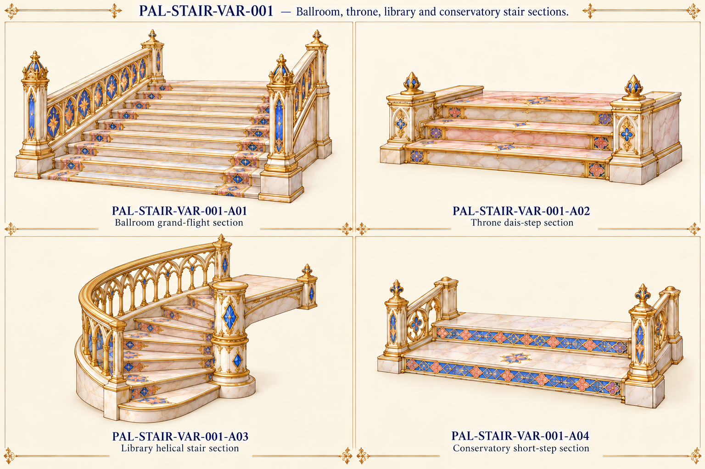

Original source vocabulary

Original palace component references. No accepted models or verified seamless textures/joins.
All active families · Part IDs · Repeat profiles and source/proposed roles

Clipped central helical support corrected to a complete finite section.
Quarter-turn helical radius/rise, upper exit and straight-flight endpoints remain model-fit tasks; source illustration is not a measured stair schedule.